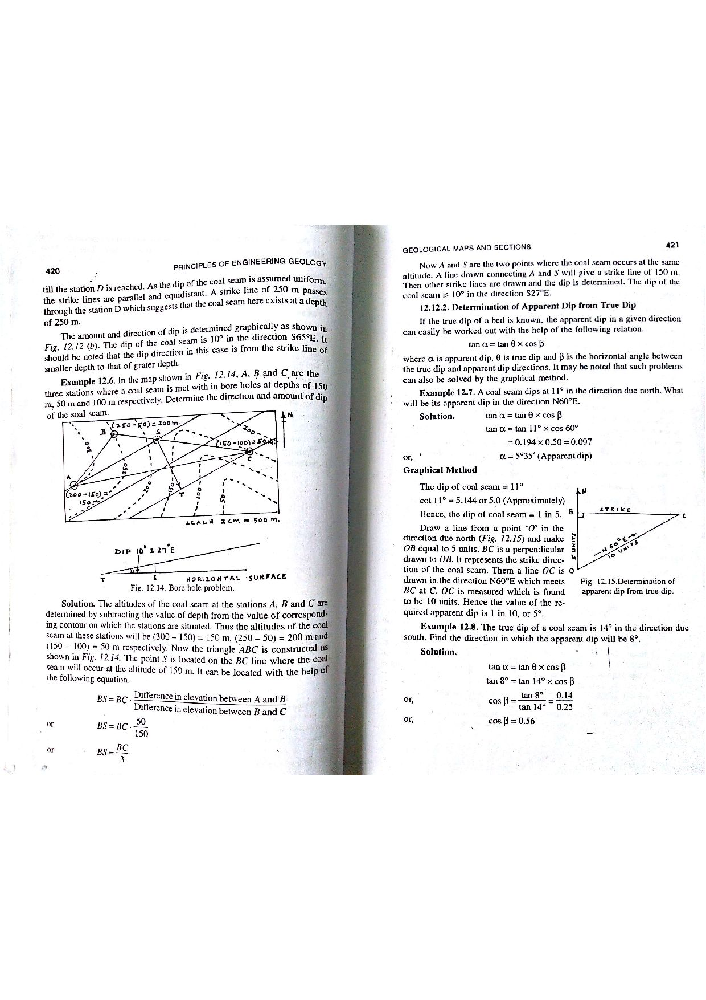

Q132: Map Scale Dynamics: How Increasing Representative Fraction Enlarges Feature Dimensions
In cartography, geological mapping, and GIS, Map Scale is defined as the mathematical ratio of a distance measured on the map sheet ($d_m$) to the corresponding actual horizontal distance measured on the ground ($D_g$) (Robinson et al., 1995; Burrough & McDonnell, 1998; Bangar, p. 217):

The Arithmetic of the Representative Fraction (RF)
The classical examination stumbling block arises because scale is expressed as a fraction:
- At scale $1 : 100,000$, the Representative Fraction is: $$\text{RF}_1 = \frac{1}{100,000} = 0.000010$$
- At scale $1 : 50,000$, the Representative Fraction is: $$\text{RF}_2 = \frac{1}{50,000} = 0.000020$$
Because $0.000020 > 0.000010$ ($\frac{1}{50,000} > \frac{1}{100,000}$), transitioning from $1 : 100,000$ to $1 : 50,000$ represents an INCREASE in map scale (a larger scale map).

Linear Dimension Scaling Law
Rearranging the scale definition gives the rendered length of any real-world ground feature on the map sheet:
For a fixed ground feature of length $D_g = 1000\text{ meters}$ ($1\text{ km}$):
- On a $1 : 100,000$ map: $$d_{m(100k)} = \frac{1000\text{ m}}{100,000} = 0.010\text{ m} = 1.0\text{ cm} = 10\text{ mm}$$
- On a $1 : 50,000$ map: $$d_{m(50k)} = \frac{1000\text{ m}}{50,000} = 0.020\text{ m} = 2.0\text{ cm} = 20\text{ mm}$$
Thus, the relative linear size of the feature on the map paper doubles (increases by $100\%$).
Areal Dimension Scaling Law (The Square Law)
Because surface area is the product of two orthogonal linear dimensions ($L \times W$), the area occupied by a feature on the map sheet scales as the square of the linear scale factor:
A geological formation, granite pluton, or lake occupying $1\text{ km}^2$ on the ground covers $1.0\text{ cm}^2$ on a $1 : 100,000$ map, but expands to cover $4.0\text{ cm}^2$ (a four-fold areal increase) on a $1 : 50,000$ map!
| Scale Category | Representative Fraction Range | Ground Area Covered | Feature Depiction & Size | Standard Geological Usage |
|---|---|---|---|---|
| Large Scale | $> 1 : 25,000$ (e.g., $1 : 1,000, 1 : 5,000, 1 : 10,000$) |
Small localized area (a single mine pit, dam site, tunnel portal) | Features appear large and highly detailed; buildings, individual joint traces, and borehole collars shown to scale. | Detailed engineering geology, open-pit mine bench design, tunnel portal mapping. |
| Medium Scale | $1 : 25,000 \text{ to } 1 : 250,000$ (e.g., $1 : 50,000, 1 : 100,000$) |
Moderate district or regional quadrangle | Features appear moderate in size; Survey of India Toposheets. | Standard quadrangle geological mapping, mineral belt reconnaissance, district hydrogeology. |
| Small Scale | $< 1 : 250,000$ (e.g., $1 : 1,000,000, 1 : 5,000,000$) |
Enormous regional territory (entire state, country, or continent) | Features appear greatly reduced / tiny; heavy cartographic generalization, symbolization, and omission. | National geological maps of India (GSI $1 : 2,000,000$), tectonic framework maps, global seismicity. |
- (A) Decrease
- (B) Increase
- (C) Remain similar
- (D) No change in size
This is a classical arithmetic pitfall where candidates confuse the denominator value ($M$) with the actual fraction value ($1/M$). Because $50,000 < 100,000$, a superficial glance might lead one to think the scale is "smaller". In reality, $1/50,000 = 0.000020$ is twice as large as $1/100,000 = 0.000010$. Features decrease in size only when the scale decreases (e.g., zooming out from $1:50,000$ to $1:250,000$).
By formal definition of map scale (Bangar, p. 217; Robinson et al.): $$\text{Map Distance } = \text{Scale} \times \text{Ground Distance}$$ When the scale increases from $1:100,000$ to $1:50,000$, the Representative Fraction increases by a factor of 2. Consequently:
- The linear dimensions of all features on the map sheet (lengths of rivers, width of dykes, diameters of craters) double in size ($2\times$).
- The surface areas of all polygon features (lakes, geological units) quadruple in size ($2^2 = 4\times$).
Thus, the relative size of features rendered on the map increases.
Map scale is the fundamental transformation factor between real-world space and cartographic representation. A change in map scale directly and proportionately alters the physical dimensions of every geographic entity rendered on the medium. Asserting that feature sizes "remain similar" or experience "no change" contradicts the foundational definition of cartography.
| Representative Fraction (RF) | Verbal Scale Equivalent | Map Length of $1.0\text{ km}$ Road | Map Area of $1.0\text{ km}^2$ Forest | Relative Linear Size vs. $1:100,000$ |
|---|---|---|---|---|
| $1 : 1,000,000$ | $1\text{ cm} = 10\text{ km}$ | $0.10\text{ cm} = 1.0\text{ mm}$ | $0.01\text{ cm}^2 = 1.0\text{ mm}^2$ | $0.10\times$ (10 times smaller) |
| $1 : 250,000$ | $1\text{ cm} = 2.5\text{ km}$ | $0.40\text{ cm} = 4.0\text{ mm}$ | $0.16\text{ cm}^2 = 16.0\text{ mm}^2$ | $0.40\times$ (2.5 times smaller) |
| $1 : 100,000$ | $1\text{ cm} = 1.0\text{ km}$ | $1.00\text{ cm} = 10.0\text{ mm}$ | $1.00\text{ cm}^2 = 100.0\text{ mm}^2$ | $1.00\times$ (Baseline) |
| $1 : 50,000$ | $1\text{ cm} = 500\text{ m}$ | $2.00\text{ cm} = 20.0\text{ mm}$ | $4.00\text{ cm}^2 = 400.0\text{ mm}^2$ | $2.00\times$ (Twice as large!) |
| $1 : 25,000$ | $1\text{ cm} = 250\text{ m}$ | $4.00\text{ cm} = 40.0\text{ mm}$ | $16.00\text{ cm}^2 = 1600.0\text{ mm}^2$ | $4.00\times$ (4 times as large!) |
| $1 : 10,000$ | $1\text{ cm} = 100\text{ m}$ | $10.00\text{ cm} = 100.0\text{ mm}$ | $100.00\text{ cm}^2 = 10,000.0\text{ mm}^2$ | $10.00\times$ (10 times as large!) |
A geological dyke has a true field length of $D_g = 2500\text{ m}$. Calculate: (a) its length in millimeters on a $1 : 100,000$ map, (b) its length in millimeters on a $1 : 50,000$ map, and (c) the exact magnification factor between the two maps.
1. Length on $1 : 100,000$ map: $$d_{m(100k)} = \frac{2500\text{ m}}{100,000} = 0.025\text{ m} = 25.0\text{ mm}$$ 2. Length on $1 : 50,000$ map: $$d_{m(50k)} = \frac{2500\text{ m}}{50,000} = 0.050\text{ m} = 50.0\text{ mm}$$ 3. Magnification factor: $$\text{Factor} = \frac{d_{m(50k)}}{d_{m(100k)}} = \frac{50.0\text{ mm}}{25.0\text{ mm}} = 2.0$$ The linear length of the dyke increases by a factor of $2.0$ (doubles).
A granite pluton covers a real-world ground area of $A_{\text{ground}} = 25.0\text{ km}^2$. Calculate its rendered area in square centimeters ($\text{cm}^2$) on: (a) a $1 : 100,000$ map, and (b) a $1 : 50,000$ map.
1. Express ground area in square centimeters: $$1\text{ km} = 100,000\text{ cm} \implies 1\text{ km}^2 = (10^5\text{ cm})^2 = 10^{10}\text{ cm}^2$$ $$A_{\text{ground}} = 25.0 \times 10^{10}\text{ cm}^2$$ 2. Area on $1 : 100,000$ map: $$A_{m(100k)} = \frac{A_{\text{ground}}}{(100,000)^2} = \frac{25.0 \times 10^{10}}{10^{10}} = 25.0\text{ cm}^2$$ 3. Area on $1 : 50,000$ map: $$A_{m(50k)} = \frac{A_{\text{ground}}}{(50,000)^2} = \frac{25.0 \times 10^{10}}{2.5 \times 10^9} = 100.0\text{ cm}^2$$ Verification: $\frac{100.0}{25.0} = 4.0 = (2)^2$. The rendered map area increases four-fold!
In national geological mapping standards, the minimum polygon area that can be legibly drawn, color-coded, and labeled on a printed paper map is $4.0\text{ mm}^2$ ($2.0\text{ mm} \times 2.0\text{ mm}$). Calculate the minimum actual ground area (in hectares) that can be depicted on: (a) a $1 : 50,000$ map, and (b) a $1 : 250,000$ map.
1. Ground area for $1 : 50,000$ map: $$1\text{ mm on map} = 50,000\text{ mm on ground} = 50\text{ m}$$ $$1\text{ mm}^2 \text{ on map} = (50\text{ m})^2 = 2500\text{ m}^2$$ $$\text{MMU}_{(50k)} = 4.0\text{ mm}^2 \times 2500\text{ m}^2\text{/mm}^2 = 10,000\text{ m}^2 = 1.0\text{ hectare}$$ 2. Ground area for $1 : 250,000$ map: $$1\text{ mm on map} = 250,000\text{ mm on ground} = 250\text{ m}$$ $$1\text{ mm}^2 \text{ on map} = (250\text{ m})^2 = 62,500\text{ m}^2$$ $$\text{MMU}_{(250k)} = 4.0\text{ mm}^2 \times 62,500\text{ m}^2\text{/mm}^2 = 250,000\text{ m}^2 = 25.0\text{ hectares}$$ Cartographic Insight: Small ore outcrops between $1\text{ and } 25\text{ hectares}$ can be shown on a $1:50,000$ sheet but must be omitted on a $1:250,000$ sheet.
An aerial photograph displays an airstrip runway with a measured image length of $d_m = 7.2\text{ cm}$ ($0.072\text{ m}$). An engineering survey plan confirms the true horizontal length of the runway is $D_g = 1800\text{ m}$. Determine the Representative Fraction (RF) of the aerial photograph.
1. Calculate scale ratio: $$\text{RF} = \frac{d_m}{D_g} = \frac{0.072\text{ m}}{1800\text{ m}} = \frac{1}{\frac{1800}{0.072}} = \frac{1}{25,000}$$ The scale of the aerial photograph is $1 : 25,000$.
On a Survey of India $1 : 50,000$ toposheet, the distance between two triangulation stations is measured with a steel ruler to be $14.6\text{ cm}$. Calculate the actual ground distance in kilometers.
1. On a $1 : 50,000$ map, $1\text{ cm} = 50,000\text{ cm} = 500\text{ m} = 0.5\text{ km}$. 2. Compute ground distance: $$D_g = 14.6\text{ cm} \times 0.5\text{ km/cm} = 7.30\text{ km}$$
Cartographic drafting standards require that the minimum visible separation between two printed parallel lines on a paper map is $0.25\text{ mm}$ (the resolving limit of the human eye at normal reading distance). What is the minimum ground distance that can be distinguished as two separate parallel roads on: (a) a $1 : 50,000$ map, and (b) a $1 : 1,000,000$ map?
1. For $1 : 50,000$: $$D_g = 0.25\text{ mm} \times 50,000 = 12,500\text{ mm} = 12.5\text{ meters}$$ 2. For $1 : 1,000,000$: $$D_g = 0.25\text{ mm} \times 1,000,000 = 250,000\text{ mm} = 250.0\text{ meters}$$ Parallel features closer than $250\text{ m}$ on the ground merge into a single line on a $1:1,000,000$ map.
In digital web mapping (Google Maps, OpenStreetMap), each increment in Zoom Level ($Z \rightarrow Z + 1$) exactly doubles the linear screen resolution (pixels per ground meter). If Zoom Level 12 corresponds approximately to an RF of $1 : 136,000$, what is the equivalent map scale at Zoom Level 14?
1. Increase in zoom level: $\Delta Z = 14 - 12 = 2$. 2. Linear magnification factor: $2^{\Delta Z} = 2^2 = 4$. 3. New Representative Fraction: $$\text{Scale}_{14} = \text{Scale}_{12} \times 4 = \frac{1}{136,000} \times 4 = \frac{4}{136,000} = \frac{1}{34,000}$$ Zoom Level 14 corresponds to a scale of approximately $1 : 34,000$.
A digital geological map was scanned and digitized at a scale of $1 : 100,000$ with an effective pixel ground resolution of $10\text{ m} \times 10\text{ m}$. To display the map at $1 : 50,000$ on a standard $96\text{ DPI}$ monitor without pixilation, the required ground pixel resolution is $5\text{ m} \times 5\text{ m}$. Calculate the increase in total pixel count required to cover a $20\text{ km} \times 20\text{ km}$ quadrangle.
1. Quadrangle dimensions: $20,000\text{ m} \times 20,000\text{ m} = 400,000,000\text{ m}^2$. 2. Pixel count at $10\text{ m}$ resolution ($1:100,000$): $$N_1 = \left(\frac{20,000}{10}\right) \times \left(\frac{20,000}{10}\right) = 2000 \times 2000 = 4,000,000\text{ pixels (4 Megapixels)}$$ 3. Pixel count at $5\text{ m}$ resolution ($1:50,000$): $$N_2 = \left(\frac{20,000}{5}\right) \times \left(\frac{20,000}{5}\right) = 4000 \times 4000 = 16,000,000\text{ pixels (16 Megapixels)}$$ $$\text{Increase Factor} = \frac{16,000,000}{4,000,000} = 4.0$$ The pixel count quadruples ($4\times$), perfectly matching the square law of scale enlargement.